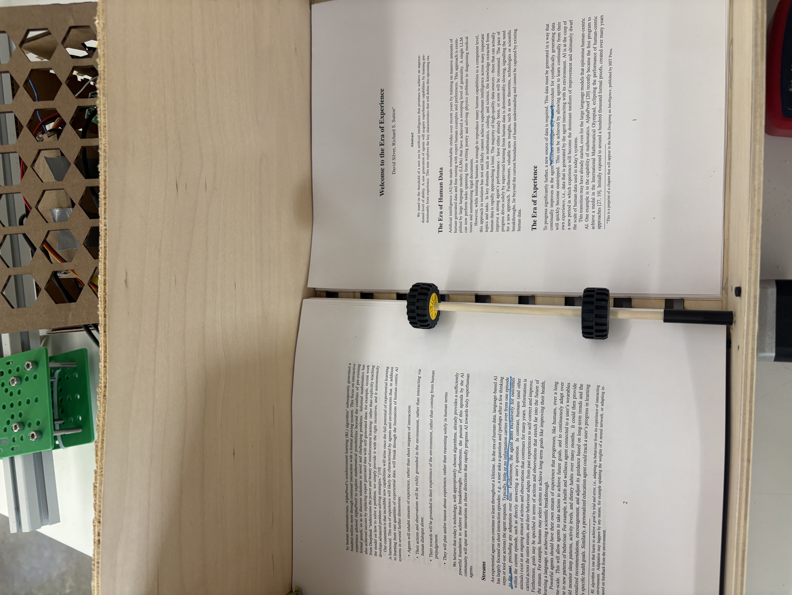
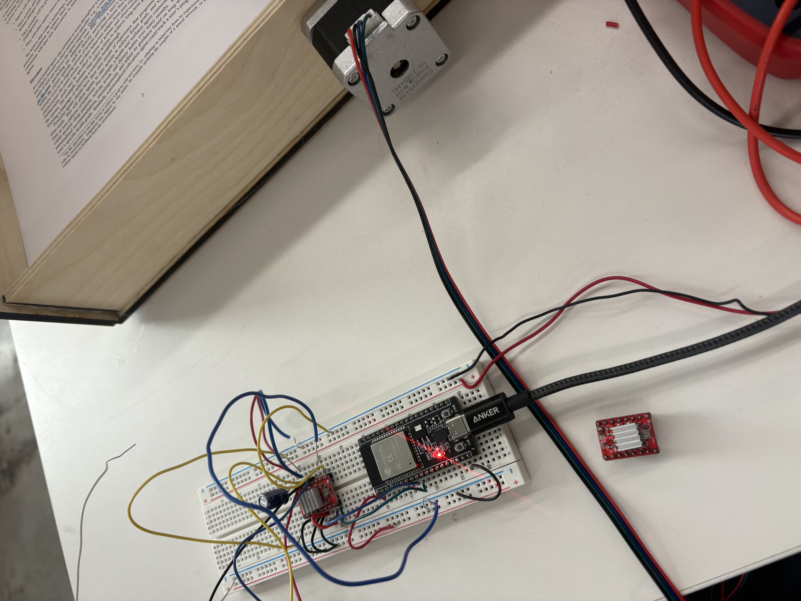
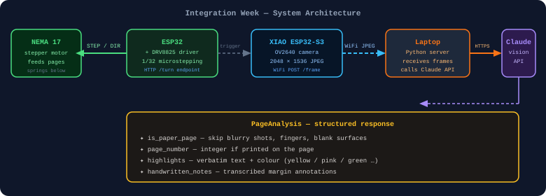

Week 11: Project Integration
This week I focused on actually getting my project to work. It was decently fun, and had a lot of issues.
Springs for paper height
First, I had to figure out a way to keep the stack of papers at the same height at all times, OR to keep the motor relative to the stack stable. I was going to do a rack and pinion mechanism, but I ended up doing something much simpler: springs! I put around 8 springs on the base of the scanning station, screwed them in place, with a bit of hot glue as well. This ended up working decently well.


Another issue: I only had 2 LEGO wheels for the roller, and the contact width didn't span the full page — so sheets kept travelling diagonally as they rolled. I fixed this by mounting side walls on both sides of the scanning station to constrain the paper and stop the skew.
Motor driver — NEMA 17 + DRV8825
I had a yellow motor that was not precise at all, so I switched to a NEMA 17
stepper driven by a DRV8825 breakout. The ESP32 sends STEP/DIR pulses over
GPIO 32 and 26. The driver runs at 1/32 microstepping (MS1/MS2/MS3 all HIGH) giving 6400
pulses per revolution — precise enough to feed exactly one page at a time. The ESP32 also
exposes a tiny HTTP server so the Raspberry Pi can trigger a page feed with a single
POST /turn.


// ESP32 → DRV8825 → NEMA 17 page feeder
// GPIO 32 = STEP, GPIO 26 = DIR
// MS1/MS2/MS3 tied HIGH = 1/32 microstepping (6400 steps/rev)
#define STEP_PIN 32
#define DIR_PIN 26
int forwardSteps = 8700; // tune until exactly one page feeds
int backwardSteps = 3500; // short reverse kick to seat next page
int stepDelayUs = 100; // half-period; smaller = faster
void doSteps(long n) {
for (long i = 0; i < n; i++) {
digitalWrite(STEP_PIN, LOW); delayMicroseconds(stepDelayUs);
digitalWrite(STEP_PIN, HIGH); delayMicroseconds(stepDelayUs);
}
}
void doPageFeed() {
digitalWrite(DIR_PIN, HIGH); delayMicroseconds(50); doSteps(forwardSteps);
digitalWrite(DIR_PIN, LOW); delayMicroseconds(50); doSteps(backwardSteps);
}
// HTTP endpoint — Raspberry Pi calls POST /turn to advance one page
void handleTurnHttp() { doPageFeed(); server.send(200, "application/json", "{\"ok\":true}"); }The double-page problem
The trickiest mechanical issue this week: sometimes the roller would grab two pages at
once, and instead of the second page feeding on top, it would slide
underneath the first one. At this stage I was still controlling the motor
entirely via manual serial commands — typing turn into the
Serial Monitor to advance one page at a time — so there was no automated fix yet. The problem
was left open; the backward-kick solution came later as a dedicated bugfix once the full
pipeline was running.
System overview

Camera setup — XIAO ESP32-S3 Sense
For the camera I used a Seeed XIAO ESP32-S3 Sense — an ESP32-S3 with a built-in OV2640 camera module. At this stage there was no Raspberry Pi; the camera captured JPEG frames and POSTed them directly to Claude's API for OCR. The sensor is tuned for printed text and highlighted passages — boosted contrast, lens correction to fix vignetting at the edges, and AGC capped at 2× to limit noise.
The ESP32-S3 cam POSTed JPEG frames to a Python server running on a laptop, which forwarded
them to Claude's vision API using structured output. Claude returned a typed
PageAnalysis object for each frame — whether the image was a valid paper page,
the page number, all highlighted text spans (with highlighter colour), and any handwritten
margin notes.
import base64, anthropic
from pydantic import BaseModel, Field
from typing import Literal
class Highlight(BaseModel):
text: str
color: Literal["yellow", "pink", "green", "blue", "orange", "other"] = "yellow"
class PageAnalysis(BaseModel):
is_paper_page: bool
looks_like_title_page: bool
title: str | None = None
page_number: int | None = None
highlights: list[Highlight] = []
handwritten_notes: list[str] = []
SYSTEM = """You analyze photos of printed academic papers captured by a fixed camera.
Return: whether the image is a usable page, title-page detection, page number,
every highlighted span verbatim (with colour), and every handwritten marginal note."""
client = anthropic.Anthropic()
def analyze_frame(jpeg_bytes: bytes) -> PageAnalysis:
img_b64 = base64.standard_b64encode(jpeg_bytes).decode()
response = client.messages.parse(
model="claude-opus-4-5",
max_tokens=4096,
system=[{"type": "text", "text": SYSTEM,
"cache_control": {"type": "ephemeral"}}],
messages=[{"role": "user", "content": [
{"type": "image",
"source": {"type": "base64", "media_type": "image/jpeg", "data": img_b64}},
{"type": "text", "text": "Analyze this page."},
]}],
output_format=PageAnalysis,
)
return response.parsed_output// XIAO ESP32-S3 Sense — OV2640 camera, periodic JPEG capture → POST to laptop
#include "esp_camera.h"
#include <WiFi.h>
#include <HTTPClient.h>
// OV2640 pin map for XIAO ESP32-S3 Sense
#define XCLK_GPIO_NUM 10
#define SIOD_GPIO_NUM 40
#define SIOC_GPIO_NUM 39
// ... (Y2–Y9, VSYNC, HREF, PCLK omitted for brevity)
void initCamera() {
camera_config_t cfg = {};
cfg.frame_size = FRAMESIZE_QXGA; // 2048×1536
cfg.pixel_format = PIXFORMAT_JPEG;
cfg.jpeg_quality = 6; // 0–63, lower = better
cfg.fb_location = CAMERA_FB_IN_PSRAM;
cfg.fb_count = 2;
esp_camera_init(&cfg);
// Tuned for printed text + highlighted passages
sensor_t* s = esp_camera_sensor_get();
s->set_contrast(s, 1); // sharpen text edges
s->set_brightness(s, 1); // lift for paper
s->set_lenc(s, 1); // lens correction — fixes edge vignetting
s->set_gainceiling(s, GAINCEILING_2X); // cap noise
}
void captureAndPost() {
camera_fb_t* fb = esp_camera_fb_get();
if (!fb) return;
HTTPClient http;
http.begin(SERVER_URL "/frame"); // laptop server
http.addHeader("Content-Type", "image/jpeg");
http.POST(fb->buf, fb->len);
http.end();
esp_camera_fb_return(fb);
}